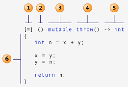

传统的信号槽绑定时，需要先声明槽函数，然后实现槽函数(槽函数的声明和实现需要分别在 .h 和 .cpp 文件中)，最后使用 connect() 绑定起来，而且在 connect() 的时候如果槽函数写错了编译时不会报错，只有在 Debug 模式下运行时才会提示槽函数不存在，Release 模式下运行时不会给予任何错误提示。Qt 5 使用 C++11 支持 Lambda 表达式，connect() 的时候如果函数名写错了就会在编译时报错，还有一点是 Lambda 表达式在需要的时候才定义，不需要声明，写起来比较简单。
Lambda 表达式可以理解为匿名函数，比如代码里有一些小函数，而这些函数一般只被调用一次（比如函数指针），这时就可以用 Lambda 表达式替代他们，这样代码看起来更简洁些，用起来也方便。
Lambda 语法简介 
Capture clause: 捕获子句
Parameter list: 参数列表 可选
Mutable specification 可选
Exception specification 可选
Return type: 返回类型 可选
Lambda Body
捕获子句的使用说明:
用法
说明
[]
表明 Lambda body 不访问 闭包 前面已声明的任何变量
[=]
以值的方式访问 闭包 前面已声明的变量
[&]
以引用的方式访问 闭包 前面已声明变量
[this]
访问类实例的 this 指针
[x, &y]
x 以传值形式捕获，y 以引用形式捕获
[=, &z]
z 以引用形式捕获，其余变量以传值形式捕获
对于 [=] 或 [&] 的形式，lambda 表达式可以直接使用 this 指针
闭包指的是一个拥有许多变量和绑定了这些变量的环境的表达式(通常是一个函数，Lambda 表达式就是一个闭包)，因而这些变量也是该表达式的一部分
下面列举一些 Lambda 表达式在 Qt 中的运用。
信号槽 1 2 3 4 5 6 7 8 9 10 11 12 13 14 15 16 #include <QApplication> #include <QDebug> #include <QPushButton> int main (int argc, char *argv[]) QApplication app (argc, argv) ; QPushButton *button = new QPushButton ("点击" ); button->show (); QObject::connect (button, &QPushButton::clicked, []() { qDebug () << "点击" ; }); return app.exec (); }
信号槽(重载) 1 2 3 4 5 6 7 8 9 10 11 12 13 14 15 16 17 18 19 #include <QApplication> #include <QDebug> #include <QComboBox> int main (int argc, char *argv[]) QApplication app (argc, argv) ; QComboBox *comboBox = new QComboBox (); comboBox->addItem ("林冲" ); comboBox->addItem ("鲁达" ); comboBox->addItem ("武松" ); comboBox->show (); QObject::connect (comboBox, &QComboBox::activated, []() { qDebug () << "Hello" ; }); return app.exec (); }
编译报错: No matching function for call to 'connect'，原因是信号 QComboBox::activated() 有重载函数:
void QComboBox::activated(int index)
void QComboBox::activated(const QString &text)
在进行信号槽绑定时，如果有重载，需要对成员函数进行类型转换，可以使用 C++ 的 static_cast 类型转换(编译时进行语法检查)，也可以使用传统的 C 语言的强制类型转换(编译时不进行语法检查，运行时才检查)，或者 C++11 的 QOverload::of，C++14 的 qOverload:
1 2 3 4 5 6 7 8 9 10 11 12 13 14 15 16 17 18 19 20 21 22 23 24 25 26 27 28 29 30 31 #include <QApplication> #include <QDebug> #include <QComboBox> #include <QtGlobal> int main (int argc, char *argv[]) QApplication app (argc, argv) ; QComboBox *comboBox = new QComboBox (); comboBox->addItem ("林冲" ); comboBox->addItem ("鲁达" ); comboBox->addItem ("武松" ); comboBox->show (); QObject::connect (comboBox, static_cast <void int )>(&QComboBox::activated), [](int index) { qDebug () << index; }); QObject::connect (comboBox, static_cast <void const QString &)>(&QComboBox::activated), [](const QString &text) { qDebug () << text; }); QObject::connect (comboBox, QOverload<const QString &>::of (&QComboBox::activated), [](const QString &text) { qDebug () << text; }); return app.exec (); }
Qt 文档: Selecting Overloaded Signals and Slots:
With the string-based syntax, parameter types are explicitly specified. As a result, the desired instance of an overloaded signal or slot is unambiguous.
QLCDNumber::display(int)
QLCDNumber::display(double)
QLCDNumber::display(QString)
To connect the int version to QSlider::valueChanged(), the two syntaxes are:
1 2 3 4 5 6 7 8 9 10 11 12 13 14 15 16 17 18 auto slider = new QSlider (this );auto lcd = new QLCDNumber (this );connect (slider, SIGNAL (valueChanged (int )), lcd, SLOT (display (int )));connect (slider, &QSlider::valueChanged, lcd, static_cast <void int )>(&QLCDNumber::display));void int ) = &QLCDNumber::display;connect (slider, &QSlider::valueChanged, lcd, mySlot);connect (slider, &QSlider::valueChanged, lcd, QOverload<int >::of (&QLCDNumber::display));connect (slider, &QSlider::valueChanged, lcd, qOverload<int >(&QLCDNumber::display));
排序 1 2 3 4 5 6 7 8 9 10 11 12 13 14 15 16 #include <QDebug> #include <QList> #include <algorithm> int main (int argc, char *argv[]) QList<int > ns = QList<int >() << 1 << 3 << 5 << 4 << 2 ; std::sort (ns.begin (), ns.end (), [](int a, int b) -> bool { return a > b; }); qDebug () << ns; return 0 ; }
自定义函数参数为 Lambda 表达式 使用 std::function<> 声明 Lambda 表达式
1 2 3 4 5 6 7 8 9 10 11 12 13 14 15 16 17 18 19 20 21 22 23 24 #include <QDebug> int foo (int n, std::function<int (int )> process) qDebug () << "Input is: " << n; return process (n); } int main (int argc, char *argv[]) int result = foo (5 , [](int n) -> int { int factorial = 1 ; for (int i = 1 ; i <= n; ++i) { factorial *= i; } return factorial; }); qDebug () << result; return 0 ; }
输出:
参考资料